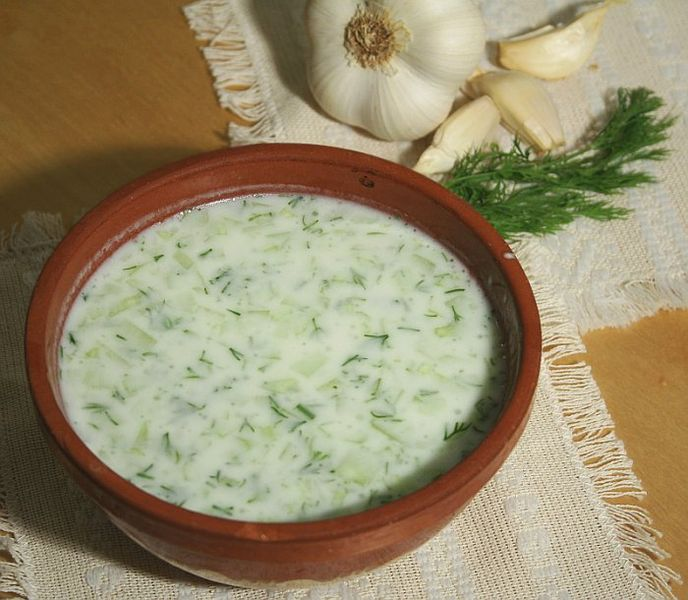

Traditional Bulgarian food
Posted on: 03/03/19
In Bulgaria, we have great food and I’m definitely not saying this just because I’m Bulgarian. If you ever get the chance to travel through different parts of the country and try different things, I am sure you will fall in love too. Our traditional food is so full of history and belonging. For the longest time, we have placed huge importance on our meals and it is pretty visible especially in the mountain areas of the country. There are so many dishes that I haven’t even ever tried but I am going to share with you a few of the most well-known traditional meals that are very familiar to every Bulgarian and that are a must-try if you are ever visiting the country.
Banitsa is made from filo pastry, with Bulgarian yoghurt, sprinkled with eggs and crushed white cheese. It is baked in the oven for about half an hour. It is easy and quick to prepare and you could say it is one of the basics that every Bulgarian housewife should know how to prepare. You can eat banitsa both warm and cold. Traditionally, it is made on holidays. For example, on New Year’s Eve, we place happy wishes for the new year written on paper and wrapped in foil, in the banitsa before we prepare it and then each person chooses his piece and reads his ‘wish’ to the others. Banitsa is also prepared in everyday life for breakfast and could be combined with yoghurt, honey or kompot - fruit (and its juice) that has been cooked in a jar. Also there are different variations of banitsa where it could also be made with spinach, leek etc.
Pita/Pitka is bread-like but way tastier. It is hugely associated with tradition and holidays and because of this it isn’t usually prepared as often as banitsa. On Christmas Eve, we put a 1 lev coin in the pitka. Whoever gets the piece with the coin in it is said to be healthy, lucky and in a good finance position for the next year. It is also prepared for many rituals and events like a wedding or christening. Pitka is made with flour, milk, eggs, yeast, butter and in some variations there is added white cheese, regular cheese, seeds etc.
Musaka is Balkan countries’ dish and in different countries and regions – there are different variations. However, in Bulgaria our main ingredients are mince, potatoes, vegetables (carrots, onion, eggplant, tomato, pepper). Many people don’t use all of the products I have mentioned and it really comes down to personal preference and taste. I, for example, don’t like having tomato and eggplant in there. However, its ‘topping’ is way more standard and conventional. The base is poured with a mix of eggs, milk and flour and afterwards the dish is prepared in the oven.
Tarator is a cool cucumber soup. It is the easiest one in this list. It is mainly eaten in the hot summer months when having something cold, like this soup, is a great feeling, although many people also eat it in winter as well, maybe just not as often. It is simply sliced cucumber that is placed into a bowl with Bulgarian yoghurt and then joined by a bit of water. A tarator’s taste would not be the same without also having a bit of garlic and dill in it, as well.
Shopska salad with rakia – a must for the Bulgarian man. It is a dinner salad made from tomatoes, cucumber, raw/roasted pepper and topped with grated white cheese and parsley. Rakia, on the other hand, is a very strong alcohol that might initially mislead you with its look. Rakia might look like water but once you smell it you’ll be surprised. It is the most traditional drink in the country. Many people still produce it themselves, including my granddad. It is made from different fruits like apricot, pear or plum and that’s why not all of the rakia tastes and smells the same. Depending on the fruit it can also come out in a yellow-ish colour.
Sarmi (cabbage rolls) are stuffed cabbage or vine leaves. Traditionally made with rice and mince and different seasoning. The stuffing is wrapped with leaves and stacked in a pot and either prepared in the oven or on the hob.
Lutenitsa is a traditional Bulgarian appetizer. It is also massively used as a spread for bread. Everyone loves it. It is made from tomatoes, pepper, eggplant and carrot (sometimes). Whilst rakia is usually made by the man in the family, lutenitsa is made by the woman.


Leave a comment
Comment here...